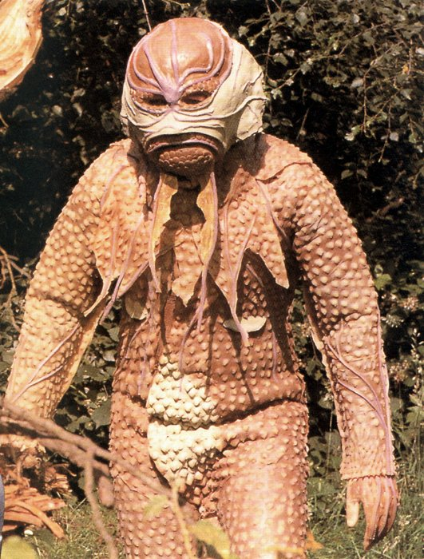

? The event occurred approximately in this interval.
?? A pretty wild guess as to when this event occurred.
click on paragraphs to see color coding for sources
GALLIFREY
They That Walk in Shadows
"Oh, you should have seen it, that old planet. The second sun would rise in the south, and the mountains would shine.
The leaves on the trees were silver, and when they caught the light every morning, it looked like a forest on fire.
When the autumn came, the breeze would blow through the branches like a song."
Click on paragraphs to see color coding for sources
Gallifrey's location relative to the Earth
ASTROPHYSICAL LOCATION
The Constellation of Kasterborous is located at the center (or the edge) of the Mutter's Stellian
(or Stellarian) Spiral Galaxy (aka the Milky Way, or Galaxia Kyklos) on the edge of the Capricorn Tract. This is as close to the center of the galaxy as its possible to be without being
drawn into the black hole. In this area of space stars would be clustered so tightly that they would only be about 1/10th of a light-year apart. Gallifrey would have been located within the Pisces-Cetus Supercluster Complex.
This also happens to be almost the center of Universe (so very near the Terminus Timestation). The Kasterborous Constellation is probably in the Sagittarius Constellation (center of the Galaxy) in the Earth skies.During the Rassilon Era
Gallifrey is 29,000 light years from Sol III. However by the time of the Humanian Era
the planet is 250,000,000 light years away
in another galaxy (it was probably moved there during the Time War or perhaps it was the only Gallifrey to physically survive the Time
War).
During
the Rassilon Era its binary coordinates are 10-0-11-0-0 by 02 from
galactic 0 center. The Nebula of Cyclops is near enough to Gallifrey to be faintly visible.
The Minyan Constellation of Kasterborous from two different angles in the Kasterborous Sector. The center most star is Gallifrey's sun. (seen on the back of the 3rd/4th/8th Doctor's TARDIS key)
HOME CONSTELLATION
Gallifrey is in the seventh system
at the heart of the Home Constellation (a Gallifreyan "constellation" refers to elements of time/relativity/location) - which is known to the lesser species as the Minyan constellation of Kasterborous
(also
known as the Kasterborous Sector). It is named for an astrologist who
was the largest contributer to the New Astrology and personally wrote Our Destiny is in the Stars near the end of the 3rd millennium of the Minyan calander. Later myths will claim that the gods yolked this astrologist to a chariot of silver
fire. His beliefs have infiltrated the cultures of the Delphons, Phreni, and Sirians. There are a total of 17 stars in the constellation of Kasterborous .
The Kasterborous Ice Ring, and Kasterborous Borealis are in the same sector as Gallifrey's system. It is possible that Kastria (the homeworld of the silicon based time aware Kastrians) and
Kastor Major (the homeworld of a tortalitarian government) are located in this sector. It is also possible that the Kastron scientists from Mawdryn Undead might have come from this sector. The other systems of the Kasterborous sector have no significant populations. One of the stars on the outer edge of the constellation is a red giant which contains the storm belt (filled with ruined
spaceships).
Gallifrey's Dominions include several planets that would be valuable if mined
(Could they contain Taranium?) The center of most of the galaxy’s trade routes pass relatively near Gallifrey. This is where most of the more
powerful civilizations in the cosmos can be found. Time Lord traffic control monitor any vessels that pass near Gallifrey's space-time location. Space vessel must request permission to pass through Gallifrey's space-time. The Sisterhood of Karn draws a significant number of space vessels
(probably to steal the Elixir), causing them to crash on Karn. Traffic Control's temporal scans will detect an unscheduled Timeship about 2 minutes before it materializes and identify
whether it is Gallifreyan from its molecular patina.
Map of Gallifrey's System
THE KASTERBOROUS SYSTEM
Gallifrey's primary star has no given name by its people, but it is sometimes know
by the Minyans as the Kasterborous System, and they designated its primary star as Gamma Kasterborous A.
Like the Earth's sun, it is a main sequence Class GV (yellow dwarf) star
though other sources claimed it was a large golden red star. This discrepancy might have been caused when the solar engineers re-engineered the star to remain main sequence.
In order to protect Gallifrey from Vampires, the solar engineer, Omega, constructed a new
Second Sun, whichhe added to Gallifrey's system. This Second Sunis named Pogar and its Minyan designation is Gamma Kasterborous B.
Pogar is a main sequence class M star. However, because of its artificial origin,
Gallifrey is often described as having only one sun
.On Gallifrey the second sun
of Pogar can be seen to rise in the south. These twin suns that Gallifrey orbits
give the planet very short nights.
The Gallifrey system has six planets (though some recordsdon't count Kasterborous and state it has only 5 planets): Those planets are, the Fibster, Gallifrey, Karn, Tersurus, the distant Polarfrey (frozen gas giant), and Kasterborous (an asteroid). Only the second and third planets of the system are considered to be important.
The planet Tersurus is known as one of the Outer Planets by the Gallifreyans. The planet has singing stones and numerous
clone banks. Raston Robots are built on Tersurus and are marketed as being ancient technology by the inhabitants. But
the design isn't really that old. Due to an attack by the Fendahl Predator, the people of Tersurus have lost all but the most tenuous forms of communications. The Time Lords have surrounded the planet
Terserus with temporal defenses. On that world is a time-shielded vault filled with the technology of the Dimensioneers.
The planet was destroyed by the Sontarans with a cyber-earthshock bomb in 6211 AD/
GRT.
The planet Karn and the surface of Karn
Karn
is probably the second planet in the system, and is only a few billion
miles (could be SI or European "billion") from Gallifrey. Karn has one moon. The ruins of the Citadel of Karn, once the center of the mighty Gallifreyan Empire, can be found there. In the modern era, Karn appears to have population of no more then a few million. The planet Sarn might later become known as Karn in the future.
Parts of Karn are covered in hexagonal crystalline rock formation. If Gallifrey had similarly rock formations it could explain the importance of hexagons in their mythology. Most parts of the planet experience almost continual electrical storms and rain fall.
Gallifrey and the night sky above Gallifrey
THE WORLD OF GALLIFREY
Gallifrey is the
third planet from the primary star. Gallifrey is known as the Shining World
(or Jewel) of the Seven Systems. Depending on the seasonGallifrey appears from space, to be a brown and green snow capped planet. Gallifrey's diameter is about 3 times
that of Sol III (Earth). Despite this the gravity, orbital radius,
pressure, temperature, and oxygen levels are the same as Earth. As Gallifrey appears to have the exact same orbit as Alzarius it might be drawn farther from the sun every 50 years by other planets in the system.
Gallifrey has
two large moon
s. One of the moons is called Pazithi Gallifreya which orbits Gallifrey every 27 days.
In ancient times it was known as the Virgin Moon Goddess. Depending on conditions
the moon appears to be copper colored and shines even in the sunlight. This moon has a large supply of Taranium which was mined during the Dark Time. The
other moon appears to be ivory or heliotrope colored. Because of their size, the moons exerts a much stronger tidal force on the planet.
Like most places that are shifted out of time, one can still see constellations of stars in the night skies of Gallifrey.
Karn, Tersurus, Polarfrey and some wisps of nebula can be seen in Gallifrey's night sky.There are also several artificial satellites that can be seen from the surface, even during the day. But, due to being shifted out of time, an observer can see a billions of years of star movement in just a few minutes.
By the time of Death Comes to Time the constellations around Gallifrey appear similar to the constellations around Sol
III.
The Planet Gallifrey
Because it located in Inner Time, Gallifrey (or maybe just the Death Zone) shows up as no time and no place
on TARDIS instruments. Despite the fact that Gallifrey has been primed to resist the effects of entropy,
the planet is very old and appears quite ancient. From orbit Gallifrey is the color of rust, with brown lakes and dust-gray clouds.
There are
three small oceans
(which were once quite large) and several seas
but less then half its surface is water.
Many of the lakes are gold colored (reflecting light from the burnt orange sky?) Due to the transduction barrier
the sky is burnt orange at night and pearlescent orange in the day. The burnt orange sky of Gallifrey famous among the time aware worlds. In addition the sky is often filled with filled with purple, green, and yellow lights.
Under certain circumstances the sky will also appear blue.
Outer Gallifrey
Officially, Gallifrey has more then 24 seasons, but (on most areas of the planet)they all resemble the conditions and dryness of Earth's Serengeti through out the year. For this reason many claim Gallifrey
has no seasons. One of these 24 seasons is called Haytime. The Autumn breezes would blow through the silver leafed trees, creating a musical effect. At one point the
planet might have been very much like Alzarius from E-Space and possibly had a Mistfall every 50 years caused by another
planet (almost certainly Karn) pulling Gallifrey farther from its sun. Despite the use of weather control technology, the planet is currently in the midst of an ice age, but in the
summer, Gallifrey's sun is still intense enough to cause sunburn on a human. Despite the ice age Gallifrey's ice caps
are quite tiny
(probably due to the overall lack of water).Though most Gallifreyans never venture outside
the Gallifreyans do make extensive use of weather control. There is
little water and no argon in the atmosphere. Cloud color ranges from dust-gray to violet.
Most of Gallifrey is covered in burnt red
rocky deserts (with orange sand) and
near endless mountain ranges. Many of the river beds are dry. There are some green forests, and golden fields strewn with rubble - but they make up a minority of the terrain.Before the Time wars there are only between 3 and 9 million Gallifreyans, which leaves many settlements and roads completely
abandoned.The undeveloped areas of Gallifrey are known as the Wild-Lands.
Gallifrey's surface is divided up into sectors including Prydonia, Capari, and Anarcos. The Capitol city is found in the nothern hemisphereof the continent of Wild Endeavor. Its found between the mountains of Solace and Solitude
and not too far from the red grass covered hillsides of Mount Perdition.
The areas around Mount Perdition were once filled with fruit and wild game. The e Fettarian pass has a train rout from the Capitol to the west cost of Wild Endeavor. The Soonwell Valley is 500 leagues (~3000 km) from the Capitol and the Camation Desert is located thousands of kilometers from the Capitol. The Prydonia Sector is located to the south of the Capitol.
The bulk of mount Cadon dwarfs the Capitol. The planet's highest mountain, Mount Cadon
(from which flows the river Cadonflood?) is found in the southern half of the planet
near the equator.This snow topped gray-green mountain is located on the continent of Wild Endeavor and extends to the fringes of Gallifrey's atmosphere (beyond even the transduction barrier). The base of the mountain slopes gently into an aired plane. At some times of the year its slopes are covered in little blue flowers.
Southern Gallifrey is considered quite wild and
beautiful
, appears to be regarded as something of a vacation area. Southern Gallifrey filled with arid planes which often experiences warm nights where the stars shine brilliantly. There are occasionally blizzards. The mountains of Southern Gallifrey are located thousands of miles from the Capitol. There is a large desert near these
mountains
(possibly the Camation Desert?).The River Lethe is located within walking distance of Mount Cadon. The river Cadonflood is located near Lungbarrow and (as its name implies) is know to flood from time to time. Mount
Lung is located in Southern Gallifrey. Other important mountains are Mount Plutarch (which is near the Lune Forest and the inland sea) and the Meridian Mountains.
Lake Abydos might be near House Heartshaven (or Dvora). The Arkanian Desert is another other areas of the planet.
Gold has no special value on Gallifrey (indicating it is quite common?) The planet also has a significant amount of Gallifreyan Zinc which is one of the strongest metals in the universe. The area of Gallifrey known as Mansippia once had massive amounts of Zyton ore. The Arcadian Sector of Gallifrey is the only place in the cosmos where one can find white point star diamonds.
This is why Arcadian Diamonds the most expensive substance in the Galaxy. White Star diamonds can be tracked
through time and space allowing them to be used as a beacon to pull things out of time locks.
Memento Mori: The Gallifreyan Flower of Remembrance
FLORA OF GALLIFREY
In the modern era very little of Gallifrey's original biosphere survives. The leaves of the plant life come in the following colors: red green, blue, bronze, silver, and some are transparent. There are Kaden-Wood Trees (with silver leaves),
and Ulanda Trees (silver leaved with tasty fruit), Maldor Trees,
Cerub Trees (with hallucinogenic truffle-flavored nuts),
Magentas (fruit tree),and Oaks.
Flowering plants include Sarlain (a yellow flower that resembles a Terran Daisy,
Daffodil or Rose), Gallifreyan Flowers of Remembrance (
Memento Mori - 6 yellow petals), Ulanda, Schlenk Blossoms (with a strong scent), Arkytior (a Gallifreyan rose) and red-petaled orchids. Some flowers glow in the dark and some might be as tall as trees. Others flowering plants found on Mt. Cadon are small and blue with long stamens that eat lizards. There are Trumpberries, Lushberries (probably edible),
Molten Rushes (with zinc hawthorns), and Grass (both in deep red and probably purple). Biotrophic fungi include Feathergills, pogsquats, skullcaps, and Cardinal's collars.
Other plants include Madevinia Aridosa (small desert plants that have an incredibly rapid life cycle), Hefzi Moss, Onions, Grockel Root (a type of plant
that is eaten and used to make alcohol), Swamp-Mint (used to season food), and Nitvil (a slimy plant with healing properties)
An Owl - The Symbol of Rassilon
FAUNA OF GALLIFREY
Millions of years after the installation of the Eye of Harmony, very little of Gallifrey’s original biosphere
survives and some species,
like the the fledershrews, are in danger of dying out. But Time Lords have used the Time Scoop to collect all the extinct species from its past. For this reason, no animal ever
became completely extinct.
They are probably preserved in zoos and some of the more fearsome ones were placed in the Death Zone.
* Invertebrates: Beatitude Flies (with golden wings),
Butterflies, Bees, Gullet Grubs, Blossom Thieves, Scrubblers, Neversuch Beetles,
Sandbeetles, Waspbeatles, Dustworms, Scissors Bugs, Flutterwings (3 meters by 25 meters, they never land, 5 races of flutterwing: wild endeavor, mandrigal, silver-band, blue crystal,
perdition), Snails, Water-Sligs, and web spinning insects,
including spiders about an inch long. There are really nasty creatures that live beneath big stones.
* Marine life: Singing Yaddlefish (will sing
and can be eaten), Kittensharks (are hatched from eggs and presumably grow up to be Catsharks), and Axolotl Salamanders.
* Elapids:Taipan (a 10 meters long venomous snake), Venal Snakes, Bat-Snakes, and 20 meter long reptiles that resemble a brontosaurus with thick chitinous scales and serrated teeth.
* Avians:Owls (the symbol of Rassilon), Flurry Birds, Trunkikes
(game bird whose eggs are often eaten), Air Diamonds (which fly in the upper atmosphere), and various song birds.
There are dinosaur-like
Gargantosaurs and a massive creature (twice the size of a hab-bloc) with 2 legs, 2 vestigial wings (with purple
and white feathers) and 4 eyes.
* Mammals:Gallifreyan children play with stuffed animals that look like teddy-bears with long ears. Plungbolls (thumbnail
sized furry creatures, live in mountains, attach en masse to warm objects), Taffelshrews, Fledershrews (bat-like, mushroom eaters, that are nearly extinct), Cobblemice (which sprout wings), Rovie Mice (live in fields, long lived if they are not killed, sometimes kept as pets),
Vex (burrowing animal), Gallifreyan Womprats (1 meter long rats with fifteen legs), Pig-Rats, Flubbles (small six-legged koalas), an animal similar to a rabbit, but rounder, Sealak (often eaten), Horse-Cats, Elephants, Pig-Bears (which can be trained to household pets), Broakir (live in foothills and are often hunted for food), Baanjxx (arboreal browser, eats cerub nuts),
cows, and probably walrus. The Gallifreyan Marlot is purple and unique in all of time and space. The Doctor and Ruath
re-introduced cats into the eco-system (at a point before The Infinity Doctors).
Cats are revered on Gallifrey
as the symbol of intelligence, and,
in ancient times, it used to be traditional for every President to own one.

An example of a pre-Neanderthal Gallifreyan?
ANCIENT (Pre-Rassilon) GALLIFREYANS
The first Neanderthal Gallifreyans evolved about 10 million years before the time of Rassilon. They are the first sentient humanoids to appear in the Universe. As such their morphic fields increase the chances of
humanoids evolving on other planets.
These Gallifreyan
Neanderthals did not evolve from anything
embarrassing (like apes or monkeys). Given the vast similarities to Gallifrey and Alzarius its possible that they might have evolved from something similar
to the Marshmen of that world. The Constructors of Destiny modify the Gallifreyan Neanderthals to fulfill their destiny.
This exposure to the Untempered Schism, over billions of years of evolution, allows the Gallifreyans to become sensitive
to time and its movement.
An example of Gallifreyans who are 16, over 100 and over 900 years old, respectivelyThese early Gallifreyans had only one heart and most deaths were a result of heart failure.Ancient Gallifreyans did have a bypass respiratory system. When used, the bypass system makes them very resistant
to most forms of anesthetic
(but not chloroform and strangulation. With warning a Gallifrey can store enough oxygen in their system to be active for 20 minutes and they can survive
in a vacuum for about 10 minutes. But they must remain completely calm to use it. Any pain or unexpected shock will can cause them to exhale the air
in their lungs. They can hold their breath for hours if they don't move much. Their blood, hormones and pheromones of ancient Gallifreyans is distinctly different from modern Gallifreyans.
They
usualy can't interbreed with humans. Their children have milk teeth. Their children aged slower then Humans and it might take hundreds of years for a Gallifreyan
to mature into an adult.
An 11 year old would look like an 8 or 9 year old human,
but a 16 year old would look like an earth teenager. At around this point their aging slows dramatically
- a 80 year old would look like an 18 year old human.
Gallifreyans in their teens need as much food as a human teenager if not more.
Adult Gallifreyans eat about as much as human. Young Gallifreyans need to sleep a little more then most humans, but after they pass First Maturation and learn
to control their bodies, they only need 1-2 hours a day. While a young (around 16), a Gallifreyan’s telepathic powers are still developing and they are vulnerable
to experiencing strong emotions from large groups. Sometimes this causes a psychic feedback where the Gallifreyan ends
up reinforcing the emotions of a group.
The official documents and records stated that ancient Gallifreyans had a normal life-span of 300 year andhad no chance of living more then a few centuries. Without the regenerative powers of modern Gallifreyans, a Gallifreyan wouldbe confined to wheelchairs before they reached 200 years old. If their life was prolonged 700 years beyond that point the subject's body would atrophie until he's only a few feet
tall and he will require a wheelchair for mobility. However, some Ancient Gallifreyans were of the opinion that they would live forever if they avoided accidents.
It is know that the rule of the 508 Pythias spanned 8,000,000 years.
The bodies of the dead were usualy burned in a pyre.
By human standards ancient Gallifreyans were
stronger, more athletic, and significantly taller. The Gallifreyan women tended to be much taller then Gallifreyan males (this changed after when the looms were created).
The women also tended to have well developed muscles. While the ancient Gallifreyans lacked the regenerative powers of modern Gallifreyans, they had powers and abilities that, in the modern era, are considered to be nothing buy myth and superstitions. It is possible they might have had the telepathic, adaptive, and regenerative abilities similar to the Marshmen from
Alzarius. Some were powerful seers and visionaries
and many had telekinetic powers. It is know that they were much more powerful telepaths, and the adult minds of the planet were in constant telepathic
entrelacement due to an organ located in their hypothalamus. This was thought to be the greatest curse of Gallifreyan civilization. One Gallifreyan every 1,000 years was born
an Individual. Individuals could shield their minds from telepathy and had other psionic powers. When young, Individuals
also made good time pilots.
Because of their ability to focus older Individuals often became great philosophers, scientists, and explorers.
Many became Heroes.
The ancient Gallifreyans would be basically extinct
a few hundred years after the last Pythia cursed the entire species with sterility. Fortunately, by that point,
Rassilon and his followers had developed an alternative means of reproduction. For more details on the modern species of Gallifreyans see the
Gallifreyan Biology Page.